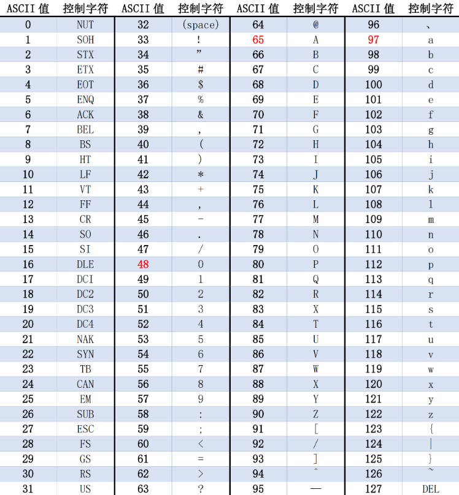

字符编码相关详解——串口怎么发送字符和汉字
先说一个结论:你可以直接将编码理解为文字(包括字母/符号等)在字符编码表中的对应顺序
为什么要使用字符编码
你有没有想过，虽然你通过单片机的串口发送了“1234”，“abcd”等字符串出来,但是明明单片机的引脚只能传输和接收高低电平,但是你却能看到各种字符串,这到底是什么原因呢
以下举个简单的例子:
在考试时，你和你的同桌想传递选择题的答案，但是你们只有一个能显示数字的计算器
但是你直接输入了 1 2 3 4 ，然后把计算器偷偷递给你的同桌，你的同桌接过来一看，原来答案是 A B C D
这个你和同桌临时建立起来的选择题答案编码，其实就是一个数字和字符的映射表，1表示A，2表示B，3表示C，4表示D
ASCII编码其实也是同样的原理，
在ASCII编码中，字符“0”用十进制的48表示，字符“1”用十进制的49表示，以此类推，字符“9”用十进制的57表示。
那为什么是从48开始呢，因为48的十六进制是0x30，57的十六进制是0x39
因此字符‘0’对应了0x30，字符‘9’对应了0x39
大写字母A-Z分别对应了0x41到0x5A。
小写字母a-z分别对应了0x61到0x7A。
其他零散的位置分别用于存放符号（例如”！@#￥%……&,./<>?”以及空格等），以及一些控制命令（例如”回车”，”换行”等）

现在我们知道了ASCII编码和ASCII字符的对应关系，但是明明单片机的引脚只能传输和接收高低电平，是怎么将数值传送出去的呢？
接下来再举个例子
这是个语文/英语考试，你找不到带计算器的借口,于是你和同桌约定好了用眨眼睛来传输数据，闭眼代表0（低电平），睁眼代表1（高电平），并且你的同桌一秒钟观察你一次，记录你的眼睛状态
你们约定好以ASCII编码来传输字符
要传输的数据是 A B C D ，对应的ASCII编码是 0x41 0x42 0x43 0x44
接下来需要将十六进制转换为二进制（这一转换是有技巧的，很简单，请自行百度以下）
0x41对应的二进制是 0100 0001 ，于是你开始眨眼， 闭睁闭闭 闭闭闭睁，相当于单片机发出了电平 低高低低 低低低高
0x42对应的二进制是 0100 0010 ，于是你开始眨眼， 闭睁闭闭 闭闭睁闭，相当于单片机发出了电平 低高低低 低低高低
0x43对应的二进制是 0100 0011 ，于是你开始眨眼， 闭睁闭闭 闭闭睁睁，相当于单片机发出了电平 低高低低 低低高高
0x44对应的二进制是 0100 0100 ，于是你开始眨眼， 闭睁闭闭 闭睁闭闭，相当于单片机发出了电平 低高低低 低高低低
原理讲解完毕，如果你已经理解串口是怎么传输数字和字母，那你能说出串口是怎么传输汉字的吗?
汉字传输的方法和ASCII编码类似，也是有一个编码对应着汉字，但是目前主流的汉字编码有两种，分别是GB2312以及UTF8编码，在传输汉字时，需要保证两边的编码是一致的，即两边都是GB2312或者两边都是UTF8
在GB2312编码下
t0.txt="淘晶驰"
prints t0.txt,0
GB2312编码下发出的数据为 CC D4 BE A7 B3 DB ，GB2312编码下，每个汉字占用2个字节，淘晶驰共三个字，共发出6个字节
在UTF-8编码下
t0.txt="淘晶驰"
prints t0.txt,0
UTF-8编码下发出的数据为 E6 B7 98 E6 99 B6 E9 A9 B0 ，UTF-8编码下，每个汉字占用3个字节，淘晶驰共三个字，共发出6个字节
相关链接: 串口屏与单片机连接